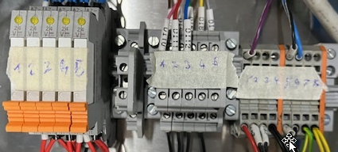

Digital IO
The digital IO configuration could be Read from ioconfig.dg
DigIN
DIN 497 - 512 RACK: 1 SLOT: 2 PORT: 1 DIN[ 497] PARTPRES 498 499 500 501 502 511 USR_IN1 512 USR_IN2
DigOUT
DOUT 497 - 512 RACK: 1 SLOT: 3 PORT: 1 CHANNEL: 4
Port 580 to Port 512 is usable
DOUT[ 499] GRIP_CLOSE DOUT[ 500] GRIP_OPEN DOUT[ 501] GRIP_ENB DOUT[ 502] PDISP_ENB DOUT[ 503] PDISP_UP DOUT[ 504] PDISP_DOWN DOUT[ 505] VAC_GRIP_ON DOUT[ 506] SUCTION_ON 507 508 509 510 Relay1 DOUT[ 511] USR_OUT1 DOUT[ 512] USR_OUT2
Relais

Relai1 : on DO[497] - ....
Relai2 : on DO[497] - ....
Relai3 : on DO[497] - ....
Relai4 : on DO[497] - ....
Relai5 : on DO[497] - ....
Ethercat Ports
sfasdf